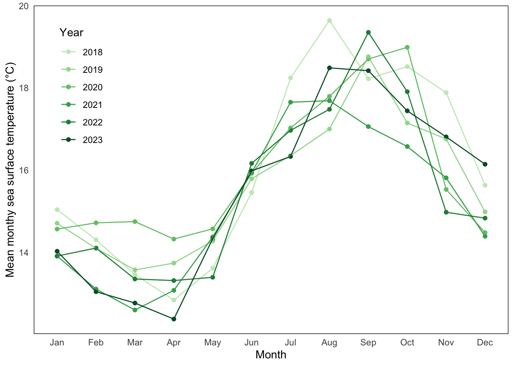

library(tidyverse)
library(here)
library(flextable)
library(janitor)
library(dplyr)
library(MuMIn)
library(lubridate)
my_data <- read_csv(here("data", "my_data.csv"))
sst <- read_csv(here("data", "SST_update2023.csv"))ENVS 193DS Final
Problem 1. Research writing (36 points)
a. Transparent statistical methods (8 points)
What statistical tests did your co-worker use? Clearly connect the test to the part that you are addressing (e.g. “In part 1, they used _______. In part 2, they used _______.”).
In part 1, they used Pearson’s r to determine if there was a correlation between distance from headwater (km) and annual total nitrogen load (kg/year).
In part 2, the authors used analysis of variance (ANOVA) to compare the average nitrogen load (kg/year) in different sources such as urban land, atmospheric deposition, fertilizer, wastewater treatment, and grasslands.
b. More information needed (8 points)
The test in part 2 seems familiar to you, but you think there’s more that your co-worker needs to do to provide more context for the results. List 2 additional tests and/or pieces of information that should be included, and explain why those tests and/or pieces of information would add useful additional context.
They should have included the F-statistic, which would tell us if the variance among groups is large compared to the variance within groups. The higher the F-statistic is, the more likely that the actual mean nitrogen load (kg/year) between sources is different.
They also should have run a Tukey HSD test, which would provide more information on which of the sources have different mean nitrogen load (kg/year) when compared.
c. Suggestions for rewriting (20 points)
In 1-3 sentences, write new research statements to include relevant components from parts a-b and a full test summary in parentheses to be transparent about the statistical method.
Be sure that your rewritten statements clearly delineate the biological narrative from the statistical summary. See lecture and workshop for examples of writing.
Note that your co-worker didn’t include any information about the test statistic, distribution, etc., and that you only know the p-value. For any part that you do not know, list that part with text. For example, you could write something like: “… r = correlation coefficient, p = 0.03, \(\alpha\) = significance level …”
There is a (strong/weak positive/negative) relationship between the distance from the headwater (km) and annual nitrogen load (kg/year) (Pearson’s r = correlation coefficient, p=0.03, \(\alpha\) = significance level)
We found a (small, medium, or large) difference (\(\eta\)2 = cohen’s d effect size) between sources of nitrogen in mean annual nitrogen load (kg/year) (One-way ANOVA, F(6, degrees of freedom of observations) = F statistic, p=0.02, \(\alpha\) = significance level) On average, (source) tended to have the highest average annual nitrogen load (kg/year).
Problem 2. Data visualization (36 points)
a. Cleaning and summarizing (16 points)
Create an object called sst_clean from sst. Clean and summarize the data.
Use the pipe operator (|> or %>%) to string functions together. After every pipe, start a new line to use the next function. Include annotations for each function you use.
When you are done with all your cleaning steps, display 5 rows from sst_clean using slice_sample() and the structure using str().
sst_clean <- sst |> # creating object sst_clean from sst
clean_names() |> # simplifying column names
mutate(
date = as.Date(date), #changing to date so year and month can be extracted
year = year(date), # extracting the year from the date
month = month(date, label = TRUE, abbr = TRUE) # extracting months from the data column, and labeling them with first 3 letters 'Jan', 'Feb', etc.
) |>
group_by(year, month) |> # finding months within the year
summarize(mean_monthly_sst = mean(temp, na.rm = TRUE), .groups = "drop") |> # calculating the mean monthly sst
mutate(year = as_factor(year)) #making the year a factor
slice_sample(sst_clean, n= 5) #displaying 5 rows # A tibble: 5 × 3
year month mean_monthly_sst
<fct> <ord> <dbl>
1 1986 Mar 14.2
2 2010 Jan 14.4
3 1991 Sep 16.8
4 2019 Sep 18.8
5 2012 Oct 18.3str(sst_clean)tibble [504 × 3] (S3: tbl_df/tbl/data.frame)
$ year : Factor w/ 42 levels "1982","1983",..: 1 1 1 1 1 1 1 1 1 1 ...
$ month : Ord.factor w/ 12 levels "Jan"<"Feb"<"Mar"<..: 1 2 3 4 5 6 7 8 9 10 ...
$ mean_monthly_sst: num [1:504] 13.1 13.5 13.3 12.9 14.4 ...b. Visualize the data (20 points)
In addition to displaying the correct subset of the data, the specific aesthetic components you need to recreate are:
- the geometries (there are two)
- the x-, y-axis, and legend text and labels
- a color gradient in a single color (doesn’t have to be blue, can be any other color) going from light –> dark for 2018 –> 2023
- the legend position inside the panel
- the panel border and background
Problem 3. Data analysis (87 points)
a. Response variable (2 points)
In 1-2 sentences, explain what the 1s and 0s mean in this data set biologically.
b. Purpose of study (2 points)
The authors compare nest box occupancy between 3 species: Swift Parrots, Common Starlings, and Tree Martins. In 1-2 sentences, explain the main difference between Swift Parrots and the other two species in the context of this study.
c. Difference in “seasons” (2 points)
The authors compare two years (that they refer to as “seasons”). In 1-2 sentences, define what those years/seasons are, and explain how they differ in the context of this study.
d. Table of models (10 points)
Make a table of all the models you will need to run. You will run 4 models: a null model, a saturated model, and two other models with different combinations of predictors.
Stuck on how to create a table? See workshop 8 for an example.
Your table should have 4 columns: (1) model number, (2) season, (3) distance to forest edge, and (4) model description.
e. Run the models (8 points)
Write your code to run all your models. Do not display any output.
f. Check the diagnostics (6 points)
Check your diagnostics for all models using simulated residuals from the DHARMa package.
Display the diagnostic plots for each model.
g. Select the best model (6 points)
Using Akaike’s Information Criterion (AIC) from the MuMIn package, choose the best model.
In text, write what the best model was (i.e. “The best model as determined by Akaike’s Information Criterion (AIC)…”).
Use the predictors and the response variable to describe the model, not the model number that you assigned.
h. Visualize the model predictions (24 points)
Create a plot showing model predictions with 95% confidence intervals and the underlying data.
Show and annotate all code. Show the output.
For full credit:
- make sure the x- and y-axis labels are written in full
- take out the gridlines
- use colors that are different from the default
i. Write a caption for your figure. (7 points)
Include a figure number, title, description of the figure, and data citation.
j. Calculate model predictions (4 points)
Calculate the predicted probabilities of Swift Parrot nest box occupancy with 95% at 0 m from forest edge and 900 m from forest edge for each level in season.
Show and annotate all code. Display the output.
k. Interpret your results (16 points)
Write 3-5 sentences summarizing what you found, making references to the figure you made in part h and the predictions you calculated in part j. Your summary should include your interpretation of:
- the predicted probability of occupancy at the forest edge (0 m) and farther away from the forest edge (900 m) between seasons
- the relationship between distance from forest edge and probability of occupancy
- the biology behind the trends you found - what explains the relationship between distance from forest edge and probability of Swift Parrot nest box occupancy?
Problem 4. Affective and exploratory visualizations (45 points)
a. Comparing visualizations (20 points)
Compare and contrast your affective visualization from Homework 3 and the exploratory visualizations you made for Homework 2. In 1-3 sentences each, explain:
- How are the visualizations different from each other in the way you have represented your data?
The visualizations had different shapes. In Homework 2, I did a boxplot, and in Homework 3, I did a histogram and a jitterplot. The boxplot was not the correct visualization as I am trying to better understand my mean shower length.
- What similarities do you see between all your visualizations?
All of my visualizations for my personal data are plotting shower length (min), because my behavior with showering was the main focus of my project.
- What patterns (e.g. differences in means/counts/proportions/medians, trends through time, relationships between variables) do you see in each visualization? Are these different between visualizations? If so, why? If not, why not?
In Homework 2, I had barely any data points, so my mean shower length for work days and non work days were clearly different. However, for homework 3, they appeared similar. So, I just decided to do a histogram for my visualization as it would be easier to incorporate into an art piece.
- What kinds of feedback did you get during week 9 in workshop or from the instructors? How did you implement or try those suggestions? If you tried and kept those suggestions, explain how and why; if not, explain why not.
I was told to make the graph larger and more of a central focus, as the eye was drawn to my artwork rather than the actual data. I am definitely going to incorporate this into my final visualization. Also personally, I want to represent both the means with work days vs non work days (because this was my initial central question), as well as a histogram of all of my showers.
b. Sharing your affective visualization (25 points)
ggplot(my_data, aes(x= `Work Day`,
y= `shower length (min)`,
color = `Work Day`)) + # outlining my plot, data, and variables
geom_jitter(position = position_jitter(width = 0.2, height = 0), # jittering poitns
show.legend = FALSE) +
stat_summary(
fun = mean, # show mean
geom = "point", # add point
size = 2,# change size of point
color = "darkblue" # make the color black
) +
labs(x = "Work Day (yes or no)", # labels
y = "shower length (min)",
title = "Shower Length by Work Day/Non Work Day") +
theme_minimal() + # minimizing theme
# making points look like water droplets
scale_color_manual(values = c("N" = "turquoise", "Y" = "turquoise")) +
theme(panel.grid = element_blank()) # removing panel grids
my_data_clean <- my_data |> # starting with my personal data frame
clean_names() # simplifying my column names
my_data_clean# A tibble: 33 × 7
date shower_length_min work_day weather_degrees_f work_type gym_y_n time
<chr> <dbl> <chr> <dbl> <chr> <chr> <time>
1 4/18/25 8.6 N 60 n/a N 07:30
2 4/19/25 7.3 N 64 n/a N 16:55
3 4/20/25 7.2 N 60 n/a N 18:30
4 4/22/25 10.5 Y 65 CCBER N 14:57
5 4/23/25 11.2 Y 61 CCBER N 13:30
6 4/24/25 6.2 Y 60 DSP Y 19:57
7 4/25/25 7.5 Y 62 DSP N 08:00
8 4/26/25 9.8 N 58 n/a Y 12:30
9 4/27/25 9.33 N 60 n/a N 10:15
10 4/29/25 9.36 Y 63 CCBER N 12:29
# ℹ 23 more rowsvar.test(shower_length_min ~ work_day, # formula
data = my_data_clean) # data frame
F test to compare two variances
data: shower_length_min by work_day
F = 0.77826, num df = 17, denom df = 14, p-value = 0.6162
alternative hypothesis: true ratio of variances is not equal to 1
95 percent confidence interval:
0.2683426 2.1422781
sample estimates:
ratio of variances
0.7782629 appears my samples have equal variances, can run student’s t test.
t.test(shower_length_min ~ work_day,
data = my_data_clean,
var.equal = TRUE)
Two Sample t-test
data: shower_length_min by work_day
t = -0.63269, df = 31, p-value = 0.5316
alternative hypothesis: true difference in means between group N and group Y is not equal to 0
95 percent confidence interval:
-1.945648 1.024315
sample estimates:
mean in group N mean in group Y
8.570000 9.030667 I did not find a significant difference in the mean shower length time between work days and non work days using a Student’s t-test t(31) = -0.63, p = 0.53, ⍺ = 0.05). So, I feel comfortable adding the histogram once again to my final visualization.
ggplot(data = my_data_clean, aes(x = shower_length_min)) + #setting parameters
geom_histogram(fill = "turquoise", # making my histogram
bins = 6) + # log2(31) + 1 = 5.96, rounded up to 6 bins
theme_minimal() + # minimizing theme
labs(x = "Shower length in minutes", # including x axis title
y = " ") + # making y axis title blank
theme(panel.grid = element_blank()) # removing gridlines Here is my final visualization!
This is a component you will complete in workshop during week 10. We will be taking attendance that day. If you attend class and complete the activity, you will receive full credit for this section.